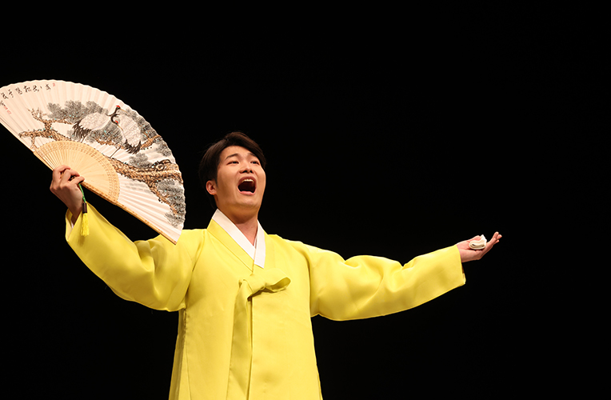
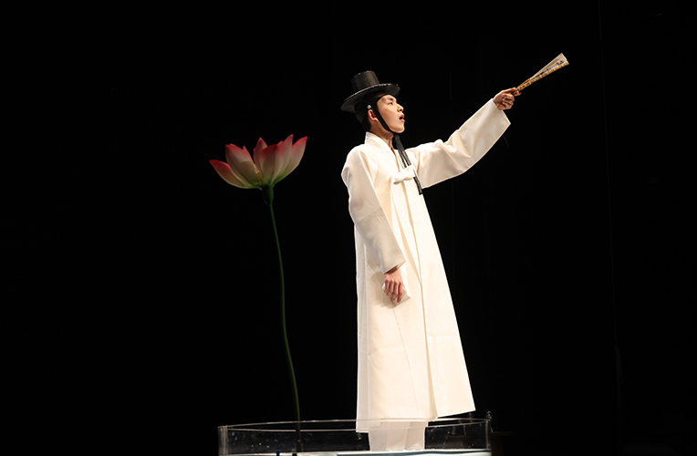
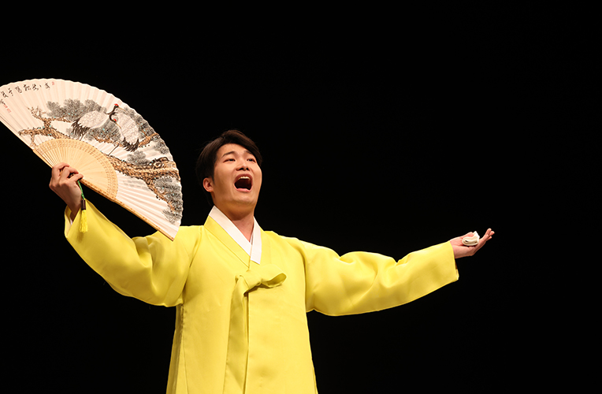
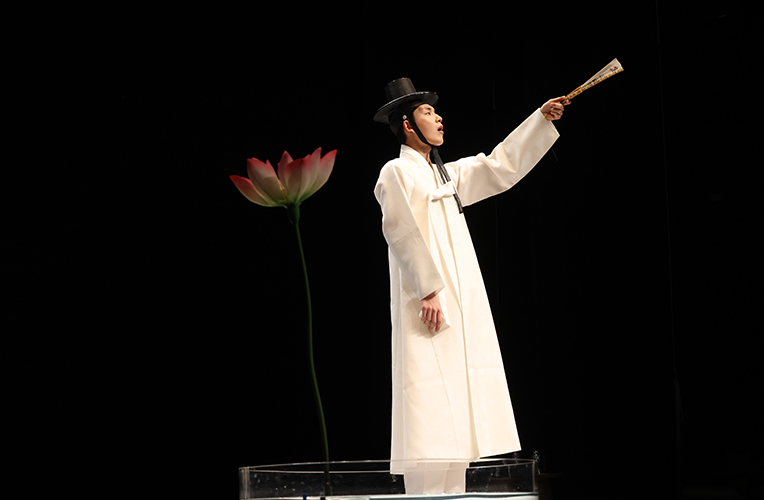

Traditional Vocal Music Group <The SorigwangdaeⅡ>
- Time
- 4.13.(Thu) ~ 4.16.(Sun) Weekdays 19:30 Weekends 14:00
- Venue
- Yeji-dang Hall
- Ticket Price
- A seat 10,000won B seat 8,000won
- Cast/Direct
- Busan National Gugak Center Music Groups, Traditional Vocal Music Group
- Audience Age
- Children in elementary school or older
We invite audience with great listening skills to present a complete set of pansori.
The stage for Representative gayageum singing repertoire, a complete set of Song of Heungbo, Song of SImcheong, Song of Chunhyang. The four vocalists in Busan National Gugak Center Traditional Vocal Music Group present four different vocal music in colorful voice.
Program
4/13(Thu) Gayageum Singing Best Parts 4/14(Fri) Manjeong style Song of Heungbo 4/15(Sat) Boseong style Song of Simcheong 4/16(Sun) Dongcho style Song of Chunhyang
* Schedule and performances are subject to change.
 


